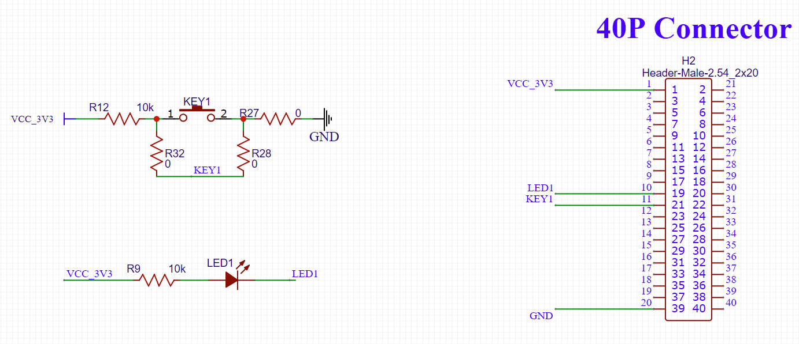

IoT网页GPIO控制LED
通过Python3 Flask作为HTTP服务端，控制GPIO
参考文档
原理图

源代码
https://github.com/LowLevelOfLogic/RaspberryPi/tree/IP_Camera
ledMonitor.py
实践操作
cd /sys/class/gpio/
echo 10 > export
cd gpio10
echo out > direction
python3 ledMonitor.py
http://192.168.3.3:5000/